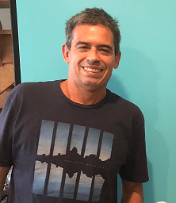

About us
Location
Aperium Technology is a fintech that started after two friends decided to put their complementary skills together to create a fantastic tool for the cryptocurrency market. One of them holds strong systems engineering skills and the other
is a financial expert. The challenge was to develop an automated trading tool that could work 24/7 in a market that simply doesn't sleep. The foremost idea was to work with main liquid markets applying non-emotional algorithmic trading .
In less than six months the first prototype was born. The initial idea became a reality, main features were in place, well tested, and the application was running smoothly. Of course that did not happen without a lot of daily effort to make the platform faster and smarter.
At this point, we have a continuous set of ideas and features in pipeline for next releases. Check upcoming features or make suggestions in our contact channels.
Our team is always ready to help and if you have a question or a suggestion, do not hesitate to get in touch.
In less than six months the first prototype was born. The initial idea became a reality, main features were in place, well tested, and the application was running smoothly. Of course that did not happen without a lot of daily effort to make the platform faster and smarter.
At this point, we have a continuous set of ideas and features in pipeline for next releases. Check upcoming features or make suggestions in our contact channels.
Our team is always ready to help and if you have a question or a suggestion, do not hesitate to get in touch.
Team

Krishnan Pontes is a professional with solid experience in software engineering and portfolio management, having led large and complex successful projects, under different perspectives of software development life cycle, on industries
like Telecom, Financial and Pharmaceutical. Just before Aperium he worked for IBM for over 7 years as a Senior Project Manager.
He is very skilled with Node.js, React, Ethereum Solidity, Docker Microservices and Amazon AWS.
Krishnan holds a Master degree in Computer Sciences by Federal University of Santa Catarina (UFSC) and MBA in Project Management by Fundação Getúlio Vargas (FGV). He is also IBM Certified Senior Project Manager.

He is very skilled with Node.js, React, Ethereum Solidity, Docker Microservices and Amazon AWS.
Krishnan holds a Master degree in Computer Sciences by Federal University of Santa Catarina (UFSC) and MBA in Project Management by Fundação Getúlio Vargas (FGV). He is also IBM Certified Senior Project Manager.
Julio Lage is a finance expert with a vast experience in business administration and project management. Graduated in Business Administration at the University of Brasilia, Postgraduate in Project Management at Fundação Getulio Vargas
– FGV and in Finance by the Brazilian Institute of Capital Market - IBMEC.
Julio led UNESCO operations division for 13 years. Worked as an entrepreneur in the clothes and constructions industries. He was responsible for the project management of the Brazilian Olympic Games 2016 in the Federal District. He also worked for a financial consulting company. He currently is the Administrative and Financial Director for the Senac University.
Julio led UNESCO operations division for 13 years. Worked as an entrepreneur in the clothes and constructions industries. He was responsible for the project management of the Brazilian Olympic Games 2016 in the Federal District. He also worked for a financial consulting company. He currently is the Administrative and Financial Director for the Senac University.
Contacts
Our mascot

Ozzy the French Bulldog!
He is cute, friendly and usually doesn't bark instead snores and grunts which is pretty funny :)
He makes a lot success when going for a walk in the neighborhood.
His main characteristic is adaptability and trustability just like the Aperium Trader. He brings luck to everyone that is friendly and kind.
He makes a lot success when going for a walk in the neighborhood.
His main characteristic is adaptability and trustability just like the Aperium Trader. He brings luck to everyone that is friendly and kind.